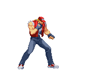

Terry Bogard
Origem
Terry e Andy eram órfãos que viviam nas ruas. Eles logo foram adotados por Jeff Bogard e eventualmente viveram em Southtown.
Quando Terry tinha 10 anos, ele testemunhou a morte de seu pai nas mãos de Geese Howard. Sabendo que precisavam de mais treinamento para confrontar Geese, os irmãos juraram passar uma década para aperfeiçoar suas artes marciais antes de tentar vingar seu pai. Ao contrário de seu irmão Andy, que deixou Southtown para treinar no Japão, Terry escolheu perambular em seu país de origem, combinando as habilidades aprendidas com seu pai, o mentor de seu pai Tung Fu Rue e as habilidades adquiridas nas ruas.
Fatal Fury
Uma década depois, o lorde do crime Geese Howard organizou um torneio, apelidado de The King of Fighters. Terry, Andy e o campeão de Muay Thai Kickboxing Joe Higashi entrariam com a finalidade de enfrentar Geese.
A batalha que se seguiu acabou por Terry derrotar o campeão de Gesse: Billy Kane, e posteriormente Geese. Por algum tempo, pensou-se que Geese havia perecido na batalha.
Fatal Fury 2
No ano seguinte, o meio-irmão de Geese, Wolfgang Krauser, assumiu o controle do The King of Fighters e levou o torneio de Southtown para o cenário mundial. As finais deste novo torneio voltariam a ver Terry lutando contra o patrocinador e ele derrotando Krauser. Durante este evento, ele fez amizade com muitos dos competidores e se tornou o herói de Southtown.
Fatal Fury 3
Algum tempo depois, foi revelado que Geese havia sobrevivido a sua batalha com Terry. Os Bogards e amigos souberam das intenções de Geese de recuperar os lendários manuscritos de Jin, e Terry mais uma vez o desafiou e o derrotou. Depois disso, Geese fugiu. Terry enfrentou Yamazaki e desafiou os irmãos Jin. Permanecendo agora como o vencedor, Terry mais uma vez foi o campeão. No entanto, Geese havia escapado com os pergaminhos.
Real Bout: Fatal Fury
Terry conseguiu ter seu confronto final com Geese. No final da luta, ele derrubou Geese na borda da Torre Geese, mas agarrou a mão de Geese e tentou impedi-lo de cair. Mas Geese recusou a ajuda e acabou caindo para o que se acredita ser a sua morte permanente.
Algum tempo depois do conflito, Terry encontrou um garoto chamado Rock Howard (filho de Geese). Ele o criaria e cuidaria como meio de colocar a disputa entre ele e Geese para trás, e o ensinaria a lutar nas ruas de Southtown e em suas viagens pelo mundo.
The King of Fighters '94 a 2001
Terry recebe um convite para entrar em um novo torneio de luta em equipe chamado The King of Fighters '94. Ele formou um time com Andy e Joe e eles efetivamente conseguiram chegar até as finais onde enfrentaram os novatos do time do Japão, liderador por Kyo Kusanagi. Pela primeira vez em muito tempo, Terry perdeu seu título de campeão do torneio para Kyo.
Desde então, Terry participou de muitas versões do torneio como capitão de equipe do Team Fatal Fury. Embora os membros da equipe tenham mudado ao longo dos anos, Terry sempre esteve presente. Ele também tem uma rivalidade com Ryo Sakazaki. Suas razões para ingressar em cada torneio tendem a se concentrar nas preocupações de Terry com o possível envolvimento de Geese.
Sua possível morte foi apresentada durante The King of Fighters '99, onde ele ficou para trás na base da NESTS em colapso. Ele não entrou em contato com nenhum de seus amigos ou entes queridos até um ano depois. Em seu tempo de ausência, Terry localizou os homens de NESTS que estavam atacando Mary. Ele decide ajudá-la em seu trabalho, unindo-se a ela nos torneios de 2000 e 2001.
Garou: Mark of the Wolves
Após os eventos de Real Bout Fatal Fury, a história muda para Second Southtown. Kain R. Heinlein, que foi criado no Second South, reivindicou a cidade como sua e ameaçou lançar a população no caos mais uma vez, para que as pessoas pudessem "desfrutar da vida" mais uma vez. Cerca de 10 anos após os eventos em Real Bout Fatal Fury, o King of Fighters: Maximum Mayhem (patrocinado por Kain) seria lançado, e Terry e Rock foram convidados a participar do torneio.
Após a vitória de Rock Howard, Terry se aproxima das ruínas de uma mansão e descobre que Rock é agora o parceiro de Kain, e sabe que ele deve confiar na decisão de Rock de ficar com Kain por um tempo. Terry, em seguida, deixa a vizinhança, sabendo que Rock finalmente deixou sua toca. Depois disso, presume-se que Terry retomou a vida de lobo solitário, deixando um futuro incerto pela frente.
Algum tempo depois do torneio Maximum Mayhem, Terry é abordado em um dia de folga por Blue Mary em sua motocicleta. Discutindo sobre o paradeiro de Rock e os rumores que persistem em torno dele sobre a ascensão de Second Southtown como uma cidade-estado, é oferecido a ele uma carona para o Pao Pao Cafe, para encobrir o caso atual em que Mary está trabalhando.
The King of Fighters 2003 a XIV
Terry organiza suas equipes com vários membros nos anos seguintes, sendo o único a pedir Tizoc em 2003 e Duck King para a equipe de KOF XI. Para acompanhar e reunir o trio lendário de Southtown, ele se junta a seu irmão e Joe mais uma vez em KOF XIII. Antes do encontro, ele teve que passar por uma longa jornada de volta à cidade e adormeceu na estação. Ele liga para Mary para dar uma carona para o Paopao Cafe, e ele chega alegremente 30 minutos atrasado. Seu atraso e atitude habitual para qualquer torneio perturba Joe, que sabe que ele e Andy têm suas próprias responsabilidades além do torneio. Embora Terry não entenda por que seu amigo está chateado, ele tem uma luta de aquecimento com ele no Paopao Cafe.
Sabendo que sua fã, Terry entra no torneio XIV para supervisionar o progresso de Alice, além de tomar sua vigilância habitual sobre Geese. Ele também aproveita para conhecer os jovens criados por seu mestre Tung Fu Rue: Shun'ei e Meitenkun, e acaba torcendo por eles na batalha final contra Verse.
The King of Cartoons
Terry apareceu pela primeira vez em The King of Cartoons 2003, no arco baseado em The King of Fighters '99. O time de Terry é um dos times confrontado pelo Hero Team no torneio, e Vinix acaba fazendo amizade com Terry já sabendo das vitórias contra Geese e Krauser.
Terry aparece mais tarde em The King of Cartoons 2008 onde ele alegremente aceita se juntar a Kyo Kusanagi e K' para descobrir o motivo por trás do retorno de Mukai.
Em The King of Cartoons: Neo Wave, Terry junto de Rock decidem participar do Torneio da Cidade em Southtown. Terry acaba sendo um dos adversários de Vinix e se enfrentam na praia, mas ele acaba sendo derrotado pelo Rei dos Desenhos ainda nas preliminares.
